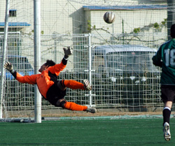
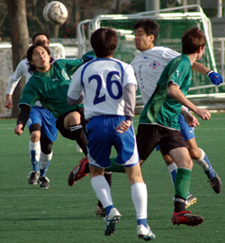
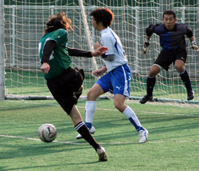

|
Hachioji Park, Saturday 15th December,
There are no more gimmees in the TML - the Jets have had their struggles this season but they jumped all over us at Hachioji. The Hibs were disorganized and scattered in the first half, and they chased us all over - it felt like they outnumbered us on the pitch. We managed a few forays into their territory, but had only one shot, a decent strike by Jay but straight at the keeper.
Eventually their hard work paid off, the Jets caught us with numbers committed on the attack and broke out 2 vs 2 into our half. Ike attempted our first offsides trap of the season, not successful, and then the Jets' Nate dribbled down on the left and smashed it past Hitoshi near post, 1-0 Jets. Nate's a no-nonsense forward that doesn't need much room to get off his shot - it's no fluke he's among the top scorers in the league.

Hibs looked to settle down and regroup at the break, we came out much more composed in the second half. We got our passing game going and locked them in, but couldn't buy a goal early, as their defense and goalkeeping held us off. Ed was stopped point-blank on a great save and later hit the post, Mike had a few hit the crossbar, Jay missed an open header off a corner.
But we kept working, Yama especially was all over the pitch, and finally Mike got free left to blast in a shot that their keeper could only parry, then Ed swept in to boot home from close range, 1-1. A few minutes later Yama got fouled hard wide right, and Ike floated the free kick to Jay - a flick on to Mike and he didn't give the keeper a chance with his shot, 2-1 Hibs.
We had most of the possession 2nd half but the Jets had two good chances on the counter, Ike made a great last-minute tackle to cut off a shot when their right winger broke free, and then Hitoshi pulled a diving save to deny Nate his second after he turned his man and released a dangerous drive just inside the post.

As the teams begin to tire the game lost some of its zest, but Ike still had plenty of energy left and ran about 60 yards down the middle of the pitch to get a perfect cross from Tomo and head it down between the Jets keeper's legs ("I was aiming for that"), 3-1 Hibs. Then with little time left Tomo got free wide right, beat his man and fed Yama, who turned nicely and scored low left to end the game, 4-1 Hibs.
A good game, and I think it was a fair result, though it certainly didn't come easy. There were plenty of hard tackles by both teams as we looked to change the way things were going, and referee Q did an excellent job, as always, of making the right calls and stamping out the violence with cards as needed.
Report by Jay Alabaster
|